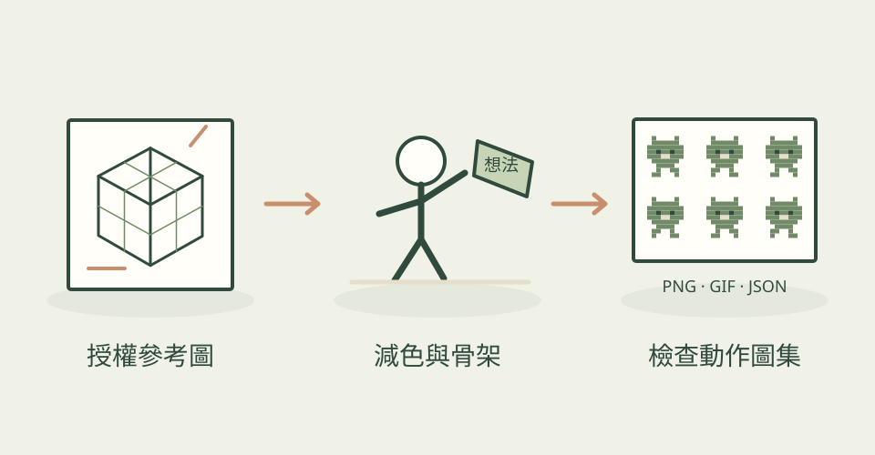

想讓龍的長身體彎動，或替小動物做走路動畫，最難的常是輪廓與動作一起維持。Codixel 建議先找自己擁有或可使用的參考圖，再讓 AI 寫程式處理成像素素材，每一步都看圖確認。
它怎麼幫忙
實際 SKILL.md 隨附 core/pixel.js 使用說明：去除單色背景、縮小、減色、整理零散像素，再加有方向的描邊和亮邊。四肢用骨架分配像素，長龍或尾巴沿脊線彎曲；單圖先像素化再綁骨，多張圖拼合的角色可先安排骨架。動作要看編號影格總覽及首尾接續，不能只相信一張 GIF 預覽。另有水面、樹木、寶石與特效的程式方法。
功能快速理解

以有授權參考圖整理像素與骨架，檢視每格動作後交付圖集；本站功能示意，非作者成果。
功能示意・本站繪製 放大查看可以這樣開口
這是一個可依需求修改的委託範例。
用我有授權的狐狸側面圖，先做 64 像素高、16 色的透明角色。確認輪廓後才安排腿和尾巴骨架，做八格走路循環；給我原尺寸和放大影格總覽，最後交付 PNG 圖集與 GIF。
適合什麼工作
適合已有角色參考、願意逐步檢查的獨立遊戲開發者與技術美術。需要精準逐像素修稿的人，仍應搭配自己的像素編輯器。
開始之前
- 準備工具
- 作者以 Claude Code 示範；本機需要 Node 執行隨附 JavaScript 工具，以及能讀圖和執行程式的 agent。核心讀寫普通 PNG；其他格式或交錯式 PNG 需先用現有工具轉換。本站未驗證其他宿主。
- 使用成本
- 程式與隨附文件採 MIT，保留授權聲明；沒有必需的付費生圖 API，AI 助手用量與本機運算另計。輸入圖片與音效必須另外確認權利，不能因工具 MIT 就任意使用網路素材。
- 交付內容
- 透明 PNG、PNG 精靈圖集、動畫 GIF、編號影格總覽；圖集格數與尺寸資訊供遊戲整合
- 先留意
- 2026-11-05 首次收錄；儲存庫建立於 2026-10-31，本次核對預設分支提交為 11-02，並非今天發布。106 顆星是倉庫收藏量，仍屬小眾。主圖為原作者寶石動畫，沒有拿來冒充狐狸或骨架效果。圖集不是可編輯的 Aseprite／Spine 原檔，也不等於自動完成引擎設定。本站只核對文件，未執行候選程式。
作者與來源
本文依作者公開說明整理，沒有實際執行這個專案。功能插圖由本站繪製，原作者範例另行標示；並非本站執行技能的測試結果。GitHub 星數為專案總量，觀察時間為 2026年11月8日 08:30（台北時間）。
與前次快照相比增加 11 星；這不是 GitHub Trending 排名。